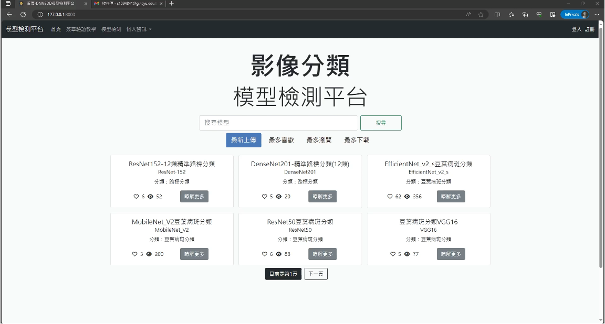
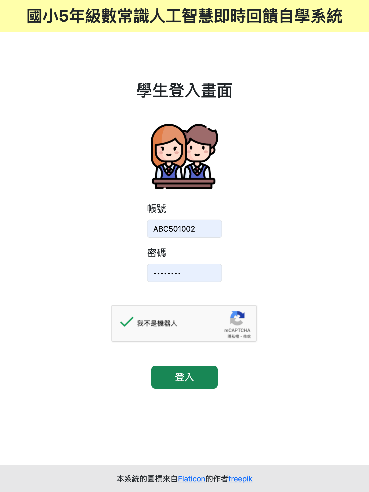

作品集

深度學習後門檢測與攻擊演繹
本專題主要研究深度學習的後門防禦方式，並針對現有的方法進行效率上的改善研究。同時，本專題也會設計一個針對影像分類模型的後門檢測平台，該平台能檢測預訓練模型是否含有後門。並經上傳者同意後將安全的模型經過數位簽章認證，公佈於平台上，提供開發者一個安全的模型下載平台。此外，本專題也會進行物件偵測模型的後門攻擊演繹。
使用技術： 深度學習、影像分類、物件偵測、Pytorch、Django、jQuery、MySQL、MongoDB、Docker、...
查看Demo影片(模型檢測平台) 查看Demo影片(攻擊演繹) 查看投影片

國小5、6年級數常識人工智慧即時回饋自學系統(NSAIIF-SLS)
數常識人工智慧即時自學系統的開發，引領國內數學教育與先進科技結合，讓國內教育邁向世界研究新趨勢。數常識人工智慧即時回饋自學系統將能夠發揮學生自學的功能，特別是針對低成就學生隨時都可以上網透過自學回饋方式進行學習。如此，老師教學不受影響，對未來教學將有重大的幫助。
使用技術： 大型語言模型、ChatGPT API、深度學習、React、Django REST framework、MySQL、Docker、...
暫不公開